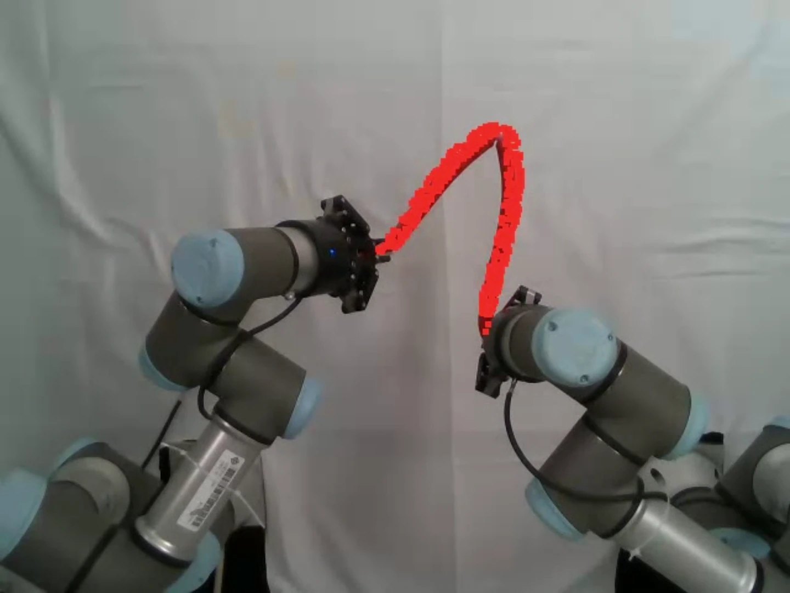

Encode partial observations
Self-masked training improves object encoding under occlusion. A separate encoder processes the scene.
Two robot arms use point-cloud predictions to shape a sponge and to grasp and shape a cable.

Play overview 1:17Pre-grasped sponge in full view.
Example trials at 8× speed.
Self-masked training improves object encoding under occlusion. A separate encoder processes the scene.
JEPA predicts ten steps in latent space using the scene point cloud and updated robot states.
The action head seeds MPPI with cable-grasping motions. MPPI scores predicted latents against the goal and replans after each action.
DOM-JEPA has the lowest mean final Chamfer distance in all five settings.
0.81 cm
Visible sponge
1.14 cm
Occluded sponge
0.77 cm
Cable (target average)
| Method | Pre-grasped sponge | Non-pre-grasped cable | |||
|---|---|---|---|---|---|
| Visible | Occluded | Target 1 | Target 2 | Target 3 | |
| DOM-JEPA | 0.81 ± 0.11 | 1.14 ± 0.08 | 0.94 ± 0.07 | 0.64 ± 0.05 | 0.73 ± 0.08 |
| JEPA w/o env | 1.40 ± 0.18 | 1.82 ± 0.13 | 1.89 ± 0.14 | 1.16 ± 0.12 | 0.97 ± 0.17 |
| Time-series | 1.14 ± 0.11 | × | × | × | × |
| GNN-based | 1.20 ± 0.13 | × | × | × | × |
| Occ-robust | 1.07 ± 0.10 | 1.99 ± 0.55 | × | × | × |
| Action head | 1.15 ± 0.14 | 1.47 ± 0.15 | 1.55 ± 0.16 | 0.72 ± 0.07 | 1.00 ± 0.21 |
Mean ± standard deviation (cm). × marks an unsuccessful trial.